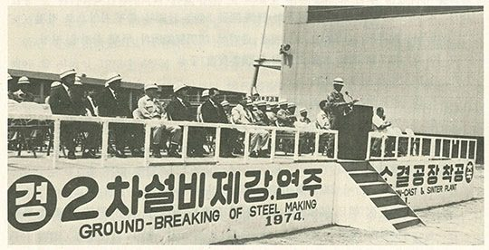
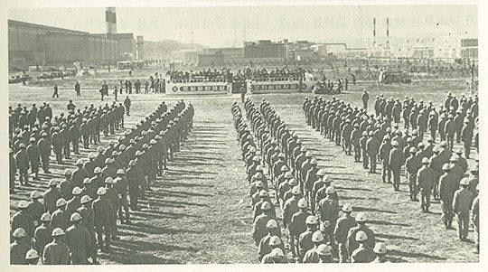
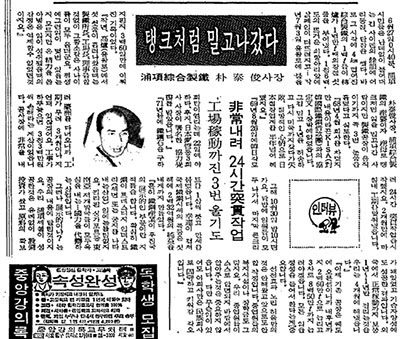

연재일 2015-02-26출처 조선일보 프리미엄조선 연재
아이젠버그는 영일만에서 아리가를 솎아내기 위해 신속하고 기민하게 움직였다. 그의 사업 거점이 일본이니 그럴 만한 능력과 인맥을 거머쥔 인물이었다. 다만, 박태준이 그의 발을 따라잡고 손을 묶을 수 있는가? 이게 관건이었다. 아이젠버그가 1970년 4월 일본에서 수상쩍게 움직인다는 소식이 박태준의 정보망에 걸려들었다. 그는 지체 없이 즉각 도쿄로 날아갔다.
만사를 제치고 황급히 만나야 할 상대는 합병을 거쳐 새로 태어난 ‘신일본제철’의 회장, 바로 이나야마였다. 아이젠버그가 박태준보다 한 발 빠르긴 했으나 그의 도착이 결코 지각은 아니었다. 이나야마는 박태준의 소상한 설명을 심각하게 경청했다. 아리가에게는 아무런 탈도 일어나지 않았다. 여름이 와도 그는 영일만에 그대로 남아 있었다. 아이젠버그가 ‘조일제철(중후판공장)’에 이어 박태준에게 두 번째로 물을 먹은 일이었다.
아리가 제거에 실패한 아이젠버그가 주춤한 사이, 이번에는 ‘소화(昭和)시대의 최대 괴물’로 꼽히는 일본인 골칫덩어리가, 포철이 일본의 철강설비회사들과 진행하고 있는 설비 계약에 개입하려 했다. 한일관계에도 상당한 막후 역할을 해온 것으로 알려진 문제의 인물은 박태준에게 간단명료한 요구를 했다. ‘나’라는 인물을 보면 알 테니 ‘나’를 경유해서 설비들을 구매하라. 박태준은 ‘괴물’을 상대하는 최고 비책은 그 앞에서 눈썹 하나 까딱하지 않는 ‘더 무서운 괴물’로 맞서는 것이라고 판단했다.
일본 괴물의 요구를 받아든 심부름꾼이 박태준을 찾아왔다. 만남을 주저하거나 회피할 생각이 전혀 없었던 그는 그저 의연히 타이르기만 했다.
“나는 내 나라를 위해 취해야 할 올바른 방도를 취할 뿐이오. 이것이 일본을 위해서도 좋은 일이라고 생각하기에 내 방법을 그대로 밀고 나가겠소.”
이때 박태준은 어떤 괴물도 물리칠 부적인 박정희 대통령의 ‘종이마패’(연재 48회)를 품고 있었지만 수고스럽게 꺼내진 않았다.

박정희의 각별한 후견인처럼 행세해온 아이젠버그와 포철 사장 박태준의 세 번째 결투는 포철 2기 주요설비인 연속주조공장 계약과정에서 이뤄졌다. 1973년 4월 일본기술단의 용역을 거쳐 그해 12월에 착공한 포철 2기 157만 톤 공사. 1973년 가을에 포스코는 연속주조공장 설비구매 계약 협상을 시작했다. 당시만 해도 그것은 상용화된 지 얼마 지나지 않은 최신 설비였다.
세계 철강업계에서는 오스트리아의 푀스트 알피네, 스위스의 콩캐스트, 독일의 만네스만 등 3개사만 공급능력을 갖추고 있었다. 어떻게하든 최저가격에 구매해야 하는 포스코로서는 입찰 경쟁자가 셋뿐이라 불리한 조건이었다.
그런데 박태준에게 콩캐스트와 계약하라는 국내 권력 쪽의 압력이 들어왔다. 아이젠버그가 끼어든 것이었다. 보고를 접한 박태준은 속으로 ‘아이젠버그 이놈이 또…’ 하고 호랑이눈썹을 곤두세우며 실무책임자에게 엄명을 내렸다.
“우리 회사의 원칙대로 해.”
공정하게 최저가격으로 유인할 국제입찰, 그래봤자 3개사가 전부였으나 그래도 그것만이 돈을 아끼는 길이었다.
박태준이 남아프리카연방공화국 요하네스버그에서 열린 세계철강협회에 참석하고 있는 동안 유럽 3개사는 치열한 수주경쟁에 돌입했다. 1973년 11월 26일 비엔나에서 공개입찰이 열렸다. 푀스트 알피네가 낙찰을 받았다. 포스코 담당자들은 경쟁 3사 대표들과 악수를 나누었다. 콩캐스트 사람들이 뒤에서 불만을 늘어놓았다.
애당초 그들은 포스코에 연속주조 설비를 팔아봤자 운전이나 제대로 할 수 있겠느냐며 잔뜩 거드름을 부린 자들이었다. 그것은 포스코가 자기네 것을 살 수밖에 없다는 확신의 표현이었다. 그들 뒤에는 아이젠버그가 있고, 아이젠버그는 한국 권력층을 움직이는 큰손이라는 점을 꿰차고 있었던 것이다.

박태준에게 내리 세 번씩이나 물을 먹은 아이젠버그는 1974년을 맞아 포스코에서 박태준을 제거하겠다는 ‘거창한 목표’를 세워야 했다. 이런 경우에 그런 종류의 인간들이 흔히 동원하는 방법이 쥐도 새도 모르게 덫을 놓는 것이다. 물론 도덕적 모함이 제일 간편하고 효과적인 덫이고, 아이젠버그도 그 효율성을 익히 잘 아는 인물이었다.
1974년 봄날에도 포스코는 ‘조업과 건설(2기)’을 병행하는 체제를 빈틈없이 가동하고 있었다. 그해 6월 26일, 포항제철에 느닷없이 긴 사이렌이 울려 퍼졌다. 그 소리가 뚝 떨어진 순간, 조업현장과 건설현장 곳곳에서 함성과 박수가 터졌다. 연산 103만 톤 체제로 출범한 종합제철소의 제1고로가 ‘정상 조업 1주년’을 눈앞에 두고 마침내 ‘쇳물 100만 톤’을 토해낸 것이었다. ‘조업 1년’의 순이익은 242억 원을 기록하고 있었다.
박태준은 다시 직원들의 복지후생을 강조했다. 천성적으로 ‘전시행정’의 속임수 따위를 혐오한 그는 그때 《조선일보》 인터뷰에서, “직원의 복지후생을 허울 좋게 선전용으로 하는 것이 아니라 실질적으로 성과 있게 하고 있다. 이 노력을 가장 잘 알아주는 사람들은 우리 직원들이다.”라고 떳떳하게 털어놓았다. 6월 27일 임원간담회에서도 박태준은, “우리 직원들 중에서 부인이나 가족이 중병을 앓는 사람이 없는지 인사부에서 파악하라.”는 지시를 내렸다.

박태준은 직원들에게 ‘목욕론’도 줄기차게 전파했다. 한마디로 요약하면, “몸이 청결해야 정신이 청결해지고 그것이 공장의 청결로 이어진다. 공장의 청결은 제품의 완벽성과 안전사고 예방으로 이어진다.”라는 것이었다. 이는 이병철 삼성그룹 회장이 탁견이라며 박수를 아끼지 않은 ‘박태준식 공장관리 1호 철학’이었다.
어쩌면 포스코가 식민지배상금으로 세운 1고로의 ‘쇳물 100만 톤’ 생산 기념으로 자축의 긴 사이렌을 영일만에 울린 그즈음이었는지 모른다. 1973년 세밑에 포스코의 연속주조 설비(포철 2기 주요 설비) 입찰에서 보기 좋게 물을 먹은 아이젠버그가 아무도 모르게 공화당 국회의원 K와 다시 굳세게 손을 잡았다. 그들은 비밀리에 진정서를 만들었다.
연속주조 설비가 푀스트 알피네로 낙찰된 배경에는 뒷거래 의혹이 있으며 같은 설비를 푀스트 알피네보다 훨씬 싸게 구매할 수 있다는 내용이었다. 그럴싸한 근거까지 첨부한 그 진정서는 관계 요로에 들어갔다. 아직 설비가 납품되지 않았으니 심각한 문제가 들통 나는 경우에는 공급자를 교체할 수도 있을 것이다.
문제의 진정서가 마지막에는 누구 손에 들어갈 것인가? 대통령 손일까, 중앙정보부장 손일까? 음모를 당하는 사람은 음모 자체를 까맣게 모르는 상태에서 은밀히 추진된 그것이 과연 어느 정도 잉태기간을 거쳐서 어떤 결과를 낳을 것인가?